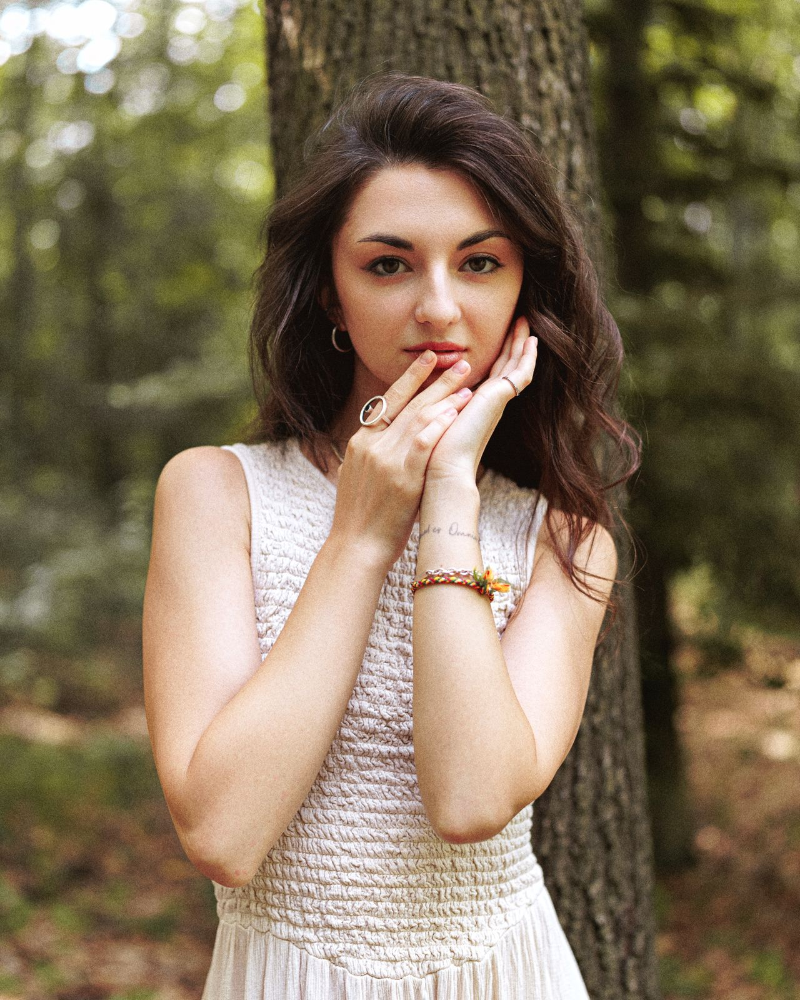

@alania.sky
В своей практике объединяю классические психологические методы, коучинговый подход и эффективную работу с телом и энергией.
Это позволяет подходить к ситуации комплексно: от анализа глубоких паттернов до восстановления физического ресурса и состояния устойчивости.

Если вы сомневаетесь, подходит ли ваш запрос — можете сразу написать мне в личные сообщения или выбрать удобный слот для диагностики.
Изменения не становятся устойчивыми, если работать только на одном уровне. Мой метод — интегральная система, которая объединяет сразу несколько.
Работа с мышлением и бессознательным
Перевод осознаний в действия и стратегии
Работа с состоянием и ресурсом
Вы меняете саму логику выбора и реакций, а не просто маскируете симптомы.
Осваиваете практические инструменты работы с тревогой и телом, которые остаются с вами навсегда.
Исследование нейропластичности
Согласно масштабному исследованию доктора Филиппы Лэлли (Phillippa Lally) из Университетского колледжа Лондона (UCL), для формирования устойчивых новых нейронных связей и автоматических моделей поведения в среднем требуется 66 дней. За этот период мозг укрепляет новые нейронные магистрали, а нервная система полностью адаптируется к новому состоянию, убирая старые реакции стресса.Разовые озарения дают временный эмоциональный подъём, но настоящая трансформация требует физических изменений в нейронных связях.
Переходите из состояния внешней зависимости в состояние полного мастера своей жизни.
Все отзывы публикуются строго с согласия клиентов, с сохранением их конфиденциальности.
Я пришла с запросом про отношения, который мучил меня годами. Мы не только его распутали — я увидела то, чего не видела раньше: свою слепую зону, которая направляла меня искать решение совсем в другую сторону. Получился полный обзор ситуации и чувство завершённости в конце, как будто ты сам погрузился в себя и нашёл все ответы, только здесь это происходит за одну сессию.
— Клиентка
За одну сессию я как будто выдохнула то, что не могла решить годами. Смогла увидеть, где сама себя блокирую в деньгах. И буквально на следующий день пришёл клиент, который молчал два месяца.
— Клиентка
До начала сессии у меня был сумбур в голове и не было конкретного запроса. Мне понравилось, что в ходе сессии мы смогли сжать его до одного конкретного. Мне важно ощущать себя в безопасности — я интроверт и не люблю напора. Всё было по делу, и благодаря этому я смогла расслабиться.
— Клиентка
Простыми смыслами, тонким чувствованием мы смогли собрать недостающие паззлы и найти ключи к решению моей ситуации. Вовремя сказанные слова попадают в самое сердце и сажают семена, которые будут прорастать.
— Клиентка
Благодаря сессии я увидела карту, по которой мне идти, при этом бережно относясь к своему состоянию.
— Клиентка
Каждое твоё слово записала — именно то, что мне нужно было услышать, то, что вернуло меня к себе. Буду возвращаться.
— Клиентка
Точно мои ощущения описали. Чувствую, что есть огонь внутри, но как и куда направить — затык. Однако мне всё чаще стали попадаться очень нужные в моменте люди.
— Клиентка
Авторский инструмент для построения счастливых отношений
По кнопке ниже — бот откроется сразу на экране записи.
В календаре активны только те слоты, которые действительно свободны.
Лана подтверждает оплату, и вам приходит ссылка на встречу.
Все детали нашей работы остаются строго между нами. Никто не узнает о факте консультаций, если вы сами не захотите этим поделиться. При личной встрече вне сессий выбор — показывать факт знакомства или нет — остаётся исключительно за вами.
Отмена и перенос. Предупредить о переносе сессии необходимо минимум за 24 часа. В противном случае слот считается сгоревшим, а оплата не возвращается.
Опоздания. При задержке менее 20 минут время сессии не продлевается. При опоздании более 20 минут сеанс считается отменённым по инициативе клиента, оплата не возвращается.
На сессию важно приходить в трезвом состоянии, выспавшимся, физически здоровым (если это не сессия по работе с телом и здоровьем) и с выполненными домашними заданиями — при их наличии.
Я могу отказать в проведении сессии, если на первой встрече проявится:
Главное преимущество моего подхода — в гибкости и ориентации на базовые механизмы работы нервной системы. Мой метод — не жёсткая абстрактная схема, а интеграция академической психологии, коучинга и телесной практики.
Мозг и нервная система всех людей функционируют по единым законам нейропластичности, но путь решения всегда подбирается индивидуально.
Почему вы можете быть уверены в безопасности и эффективности:
Лучший способ проверить — прийти на первую сессию и составить личное впечатление о контакте и методе.
Это нормально и часто бывает. Первая часть сессии — глубинная диагностика: мы вместе структурируем то, что есть, и находим настоящий запрос.
Тревога и напряжение, самооценка, эмоциональные состояния, поведение и привычки, отношения, личностные процессы, проявленность и жизненный ресурс — полный список выше в разделе «Запросы, с которыми я работаю».
Иногда да. Но собственные слепые зоны сложно увидеть изнутри: работа со специалистом заметно сокращает путь и помогает не возвращаться к старым сценариям.
Стоимость сессии — 100 € или 10 000 ₽. Оплата проходит в Telegram-боте; если удобный способ не отображается, напишите мне в личные сообщения.
Сессия оплачивается разово при записи. По индивидуальным условиям оплаты напишите мне в личные сообщения.